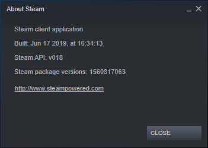
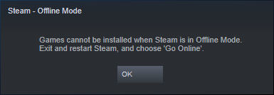
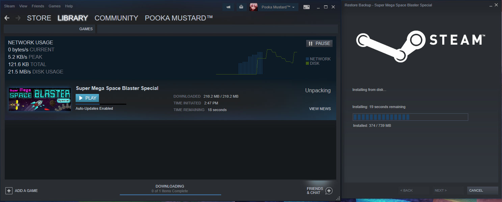

Steam is a program that is used by nearly every one who plays games on PC. Holdouts like me are rare, and in the pursuit of game journalism I was pretty much doomed to return to the program sooner or later if I wanted to most work with PC games. When a game is headed to PC, it is assumed by default to sell on Steam, and only recently was that notion challenged thanks to Epic, which is pretty much hated because in my opinion, it is not Steam, and the whole paying for exclusivity reason for hating it doesn't seem sincere to me in an industry where exclusivity is the norm.
Yet, I get the feeling as if most people who argue in favor of Steam are arguing with misconceptions more than anything, making it hard to actually counter their points reasonably. I have thus dedicated this webpage to counter some of the points that are raised time and time again but don't seem to hold any ground in reality.
If you doubt that I ever used the service, you are free to check my profile here (opens in a new tab). You'll find that I have a lot of history with the program and a decent amount of play time, qualifying me to talk about the topic.
All of this information was checked with the client built June 17, 2019.

No, they can't.
In offline mode, the context menu for an installed game has "Backup Game Files..." greyed out, showing that Valve really didn't intend to let you backup your games offline. But because it's Valve and inconsistency is their #2 success, you can still backup by going through "Properties" (again through the context menu), "Local Files" and then clicking "Backup Game Files..." there.
(I swear that when hovering over that button in offline mode, sometimes it doesn't light up, implying there was an attempt to disable it?)
Now, if you attempt to restore a game while in offline mode, you'll get greeted with this nice little message.
It is obvious that you can forget about ever relying on your backups while in Steam's offline mode. Heck, if you look at the downloads screen while restoring your game backup outside of offline mode, you will notice that Steam will download data BEFORE it begins the local restore operation, as shown in the next picture, where network activity was present before there was disk activity.

If you want to have backups that can properly install offline, Steam will not provide them for you. You should be looking for DRM-free games, which you can buy from GOG.com (recommended), itch.io or Humble Store, among others. They won't integrate with Steam, but that's the top selling point here.
Otherwise, backup your Steam games by archiving them manually through programs like 7-zip or WinRAR, along with a copy of your game's appmanifest file (they're named "appmanifest_[game_app_id]", easiest way to obtain the appID is by going to your game's "Properties" menu and clicking "Create Desktop Shortcut", then inspecting the URL of your created shortcut through your system's Properties view, the last number is your appID), and restore them to your steamapps directory when you want them back again, followed by a restart of the client.
One reason I hate mandatory "gaming clients" is that their frequent updates means my ability to play games is more often than not disrupted because either the client itself is updating or the game I'm trying to run has an update and I can't play it while the update is on-going.
I've seen a Reddit thread asking how to disable client updates, but everyone responded by simply saying they couldn't. You can disable client updates by creating a new file called "steam.cfg" and pasting this single line into the file:
BootStrapperInhibitAll=enable
Save the file, and copy it to your Steam directory. As long as you hold on to your copy of Steam, and until Valve suddenly disallows older versions from communicating with steam, you will be fine. Of course, things that are server-sided will continue updating no matter what you do.
Uhh yes, accounts can get deleted entirely and that's as recent as 2018.
You may argue that this user has caused damages to Valve and kept testing their patience after being repeatedly warned against doing so, but the point still stands: his purchases were denied and just disappeared. And thanks to the DRM, he cannot verify he once owned his purchases because he longer has an account to verify these purchases!
It's the equivalent of being banned from a WalMart, followed by their staff taking away all your purchases by force, including say, your televisions, your phones, your furniture, etc.
Generally not doing any actions that put your account in jeopardy is a good start, but you should still worry about account deletions. It can happen to you by accident or with malice, either by a disgruntled Valve employee or a hacker gaining access to the company's databases. By having your account deleted this way, your installed games will not work because you can't verify you own them!